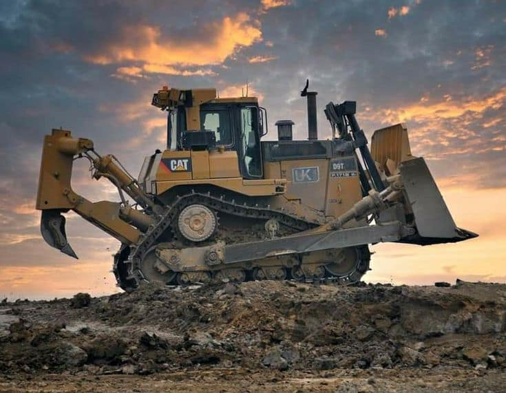
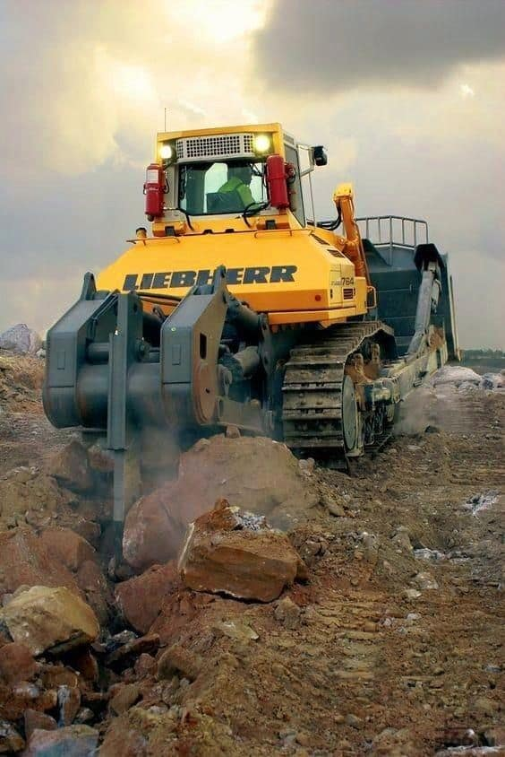
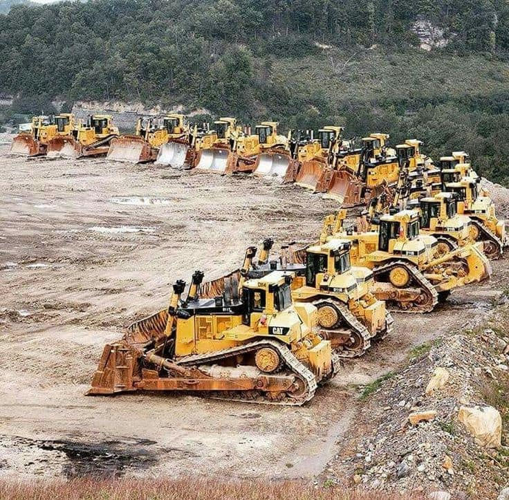
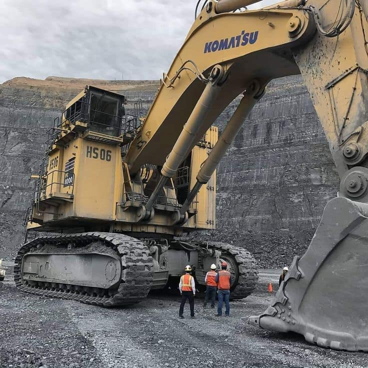
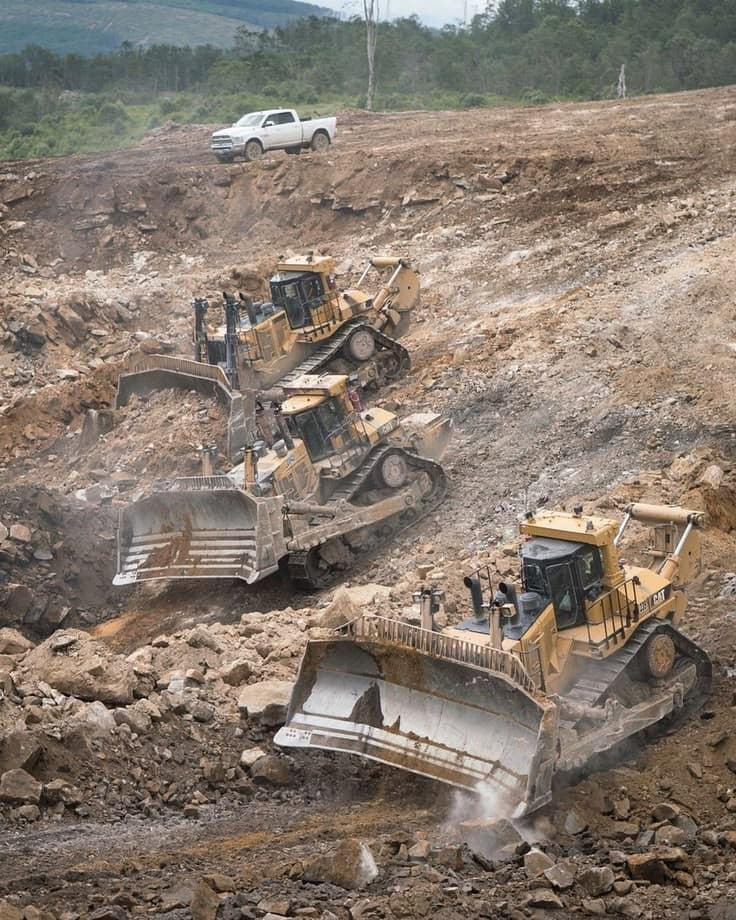
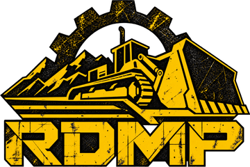

Análisis de aceite
Toma de muestras del aceite de motor, del sistema hidráulico o de las transmisiones para su análisis. Los resultados ayudan a identificar desgaste interno, contaminación o degradación del lubricante.

Servicio técnico móvil multimarca
Asistencia técnica móvil multimarca para maquinaria de construcción, obra pública, canteras y minería.

Localizamos y resolvemos averías electrónicas, eléctricas y de software en maquinaria de construcción, obra pública, canteras y minería. Nos acercamos hasta el problema, allí donde se produzca la avería, para reducir traslados y tiempo de parada.
Nos desplazamos hasta la máquina. Con la marca, el modelo y los síntomas confirmamos antes de salir qué herramientas de diagnóstico y documentación requiere la intervención. Lo que se valora en cada caso es el alcance de la reparación: algunas requieren instalaciones específicas y se coordinan con un taller especializado.
Cómo trabajamosServicios
Diagnóstico multimarca, electrónica, sistemas eléctricos y software, e intervenciones rápidas en el lugar de trabajo.
Partimos de los síntomas y los códigos de fallo registrados, y comprobamos los sistemas implicados para localizar el origen de la avería antes de sustituir componentes.
Unidades de control, sensores, actuadores y su cableado. Medición de señales y comprobación de la comunicación entre componentes.
Arranque, carga, alimentación, iluminación, mazos de cables, conectores y protecciones. Búsqueda de cortocircuitos, derivaciones y falsos contactos.
Consulta de parámetros y registros de la máquina, y configuración o actualización del software cuando se dispone de las herramientas y la documentación adecuadas para ese equipo.
Priorizamos la reparación en el lugar de trabajo siempre que sea técnicamente posible, para evitar grandes gastos de transporte y reducir el tiempo de inmovilización. Cuando la intervención requiere desmontajes importantes o instalaciones específicas, coordinamos la reparación con un taller especializado.
Fabricación a medida de piezas auxiliares no críticas mediante impresión 3D, con evaluación técnica de cada aplicación.
Mantenimiento preventivo
Mantenimiento preventivo multimarca para detectar a tiempo indicios de desgaste o de mal funcionamiento y planificar la intervención antes de una avería importante.
Toma de muestras del aceite de motor, del sistema hidráulico o de las transmisiones para su análisis. Los resultados ayudan a identificar desgaste interno, contaminación o degradación del lubricante.
Seguimiento periódico del estado de la máquina: códigos de fallo registrados, parámetros de funcionamiento y evolución de los resultados de cada análisis.
Un mismo criterio de seguimiento para máquinas de distintos fabricantes, adaptado a las horas de trabajo y a las condiciones de cada obra o explotación, y coordinado con tu equipo de mantenimiento.

Impresión 3D
Fabricamos piezas auxiliares a medida para apoyar la reparación y el mantenimiento de maquinaria pesada y reducir determinadas esperas de recambios o mecanizados externos.
Material y plazo definidos según la geometría, las condiciones de uso y el posprocesado.
Consultar fabricación de una piezaRejillas auxiliares, separadores, topes, soportes, adaptadores y útiles de montaje. Evaluamos cada pieza según su función y condiciones de uso.
Fabricación en metal o composite según la aplicación, con medición o escaneado 3D, diseño y posprocesado cuando corresponda.
Piezas no críticas, sujetas a validación técnica. Se excluyen componentes estructurales, de elevación, frenado, dirección o seguridad.
La configuración de referencia es Markforged FX10 con Metal Kit. En metal, la pieza pasa por lavado y sinterización; no sale acabada al terminar la impresión.
El acero inoxidable 17-4 PH es el metal de referencia y se elige según la aplicación. No cubre cualquier pieza. Cuando corresponde, la fabricación se hace en composite.
El trabajo incluye medición o escaneado 3D, diseño y acabado cuando la geometría o las tolerancias lo requieren. Mencionar Markforged no implica colaboración oficial ni una instalación móvil certificada.
Cómo trabajamos
Marca, modelo, ubicación, síntomas, códigos de fallo y comprobaciones ya realizadas. Con esos datos preparamos la intervención.
Pedimos los datos que falten y definimos el alcance: qué se comprueba, qué se repara en el lugar y qué requeriría taller.
Vamos hasta la máquina, en la obra, la cantera o la explotación, con los equipos de diagnóstico que requiere la intervención.
Localizamos el fallo y reparamos en el lugar de trabajo siempre que sea técnicamente posible. Si hacen falta desmontajes importantes o instalaciones específicas, coordinamos la reparación con un taller especializado y con tu equipo de mantenimiento, con el diagnóstico documentado.

Pendiente de estudio
Servicio no disponible Todavía no se ofrece
Estamos evaluando la posibilidad de ofrecer en el futuro un servicio de reprogramación de maquinaria pesada orientado a optimizar el consumo de combustible. Este servicio todavía no se ofrece y, por ahora, no aceptamos encargos de este tipo.
Antes de decidir si lo incorporamos, necesitamos estudiar, entre otros aspectos:
No publicaremos cifras de ahorro ni resultados mientras no dispongamos de mediciones verificadas.


Contacto
Indica marca, modelo, ubicación y síntomas de la avería. Añade los códigos de fallo y las comprobaciones realizadas para preparar la intervención.